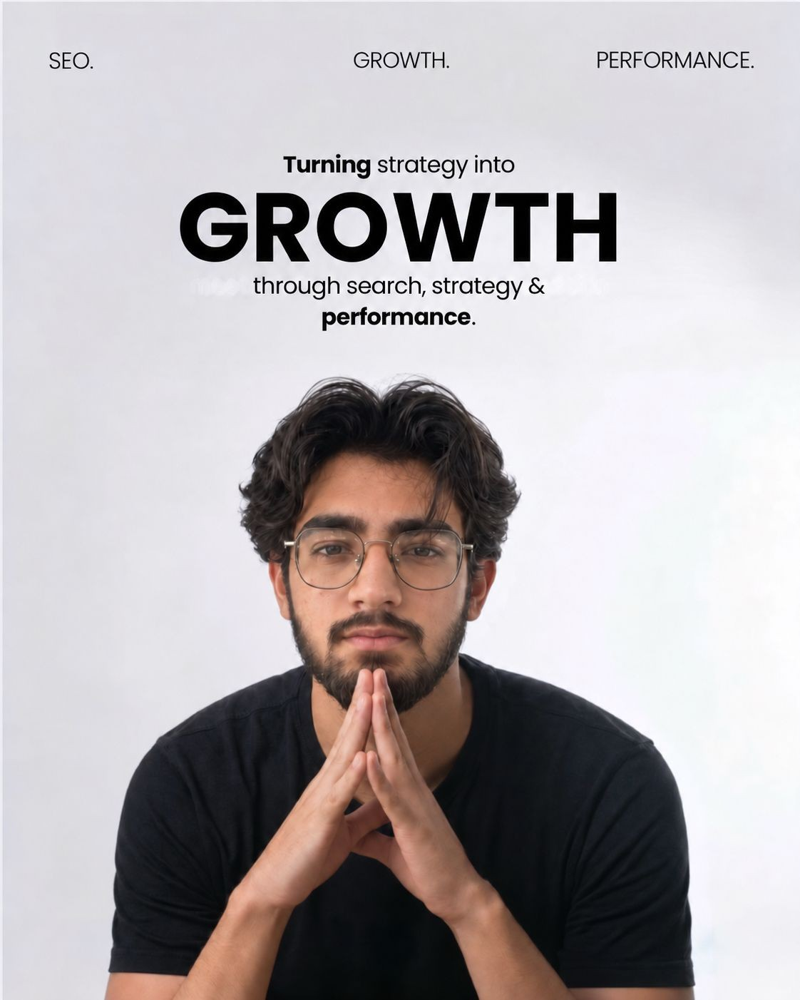
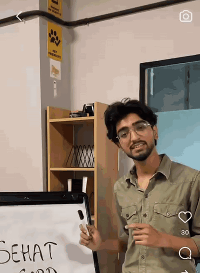
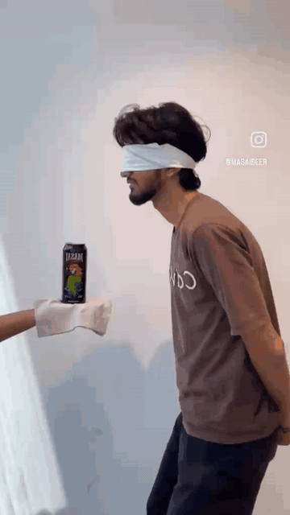

I’m Bhavya.
Performance Marketer.
Growth Executive.
Digital Thinker.
I work where strategy, execution and performance meet — building marketing around what a business actually needs.

I didn’t start withperformance marketing.
- I started with SEO.
- Then websites.
- Then content.
- Then social.
- Then paid acquisition.
Each step gave me a different way of looking at the same thing — how people find a business, what makes them pay attention, and what makes them take action.
Somewhere along the way, I stopped looking at marketing as separate channels.
I started looking atthe whole journey.
How I seethings.
- I like knowing why something works — not just that it did.
- I don’t start with the channel. I start with the problem.
- Most of what I know, I learned by trying it first.
- The small details are usually where things break. Or where they start working.
- I like the point where a creative idea has to earn its results.
- Numbers don’t make the decision. They make the next one clearer.
The work changes. The thinking keeps evolving.
I studied computer science.
Somehow, I ended upin marketing.
Outside thecampaigns.
A little bit of content, too.


Today, the focusis performance.
Paid acquisition is where my work is heading deepest — Google Ads, Meta Ads and LinkedIn Ads, with a broader understanding of SEO, websites, email, research and digital growth behind it.
I like being close to both sides of the work: understanding the business problem and getting into the details of what actually runs.
I didn’t start with a specialisation. I built one through the work.
And there’s still a lot more to learn.
Have something worth building?
I’d like to hear what you’re working on.
Get in touch →